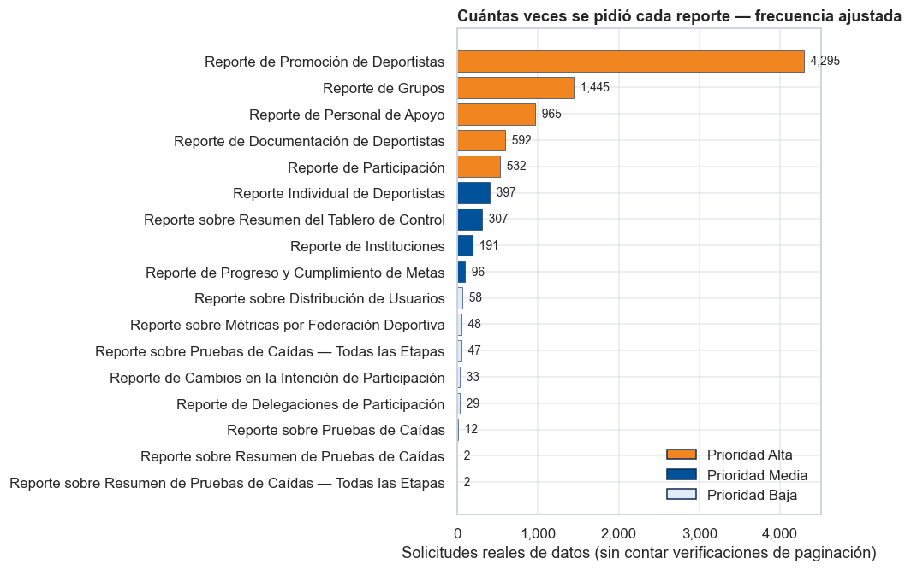
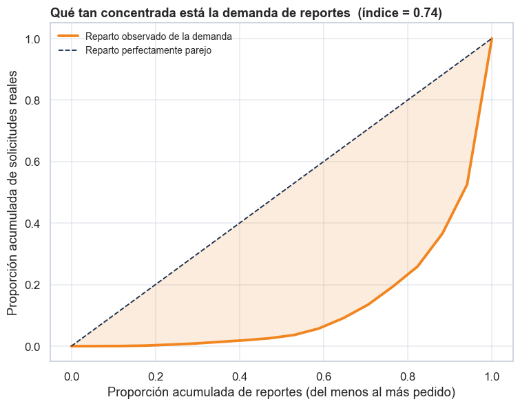
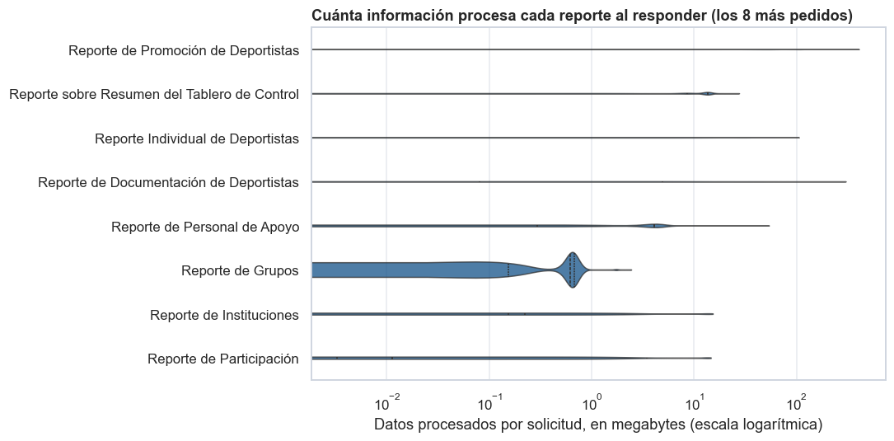
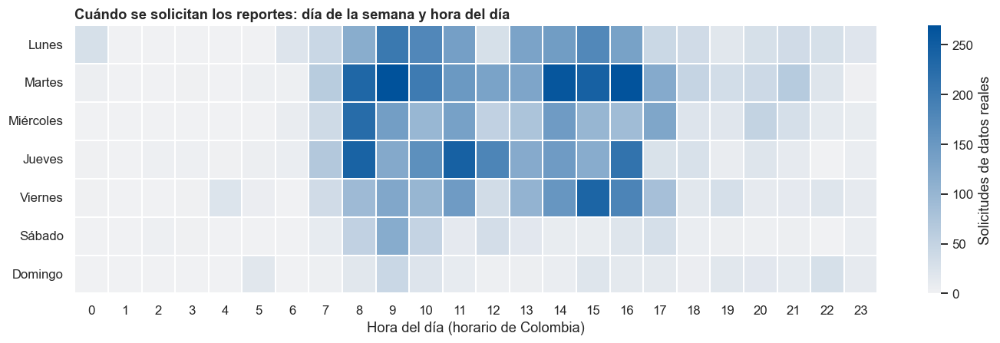
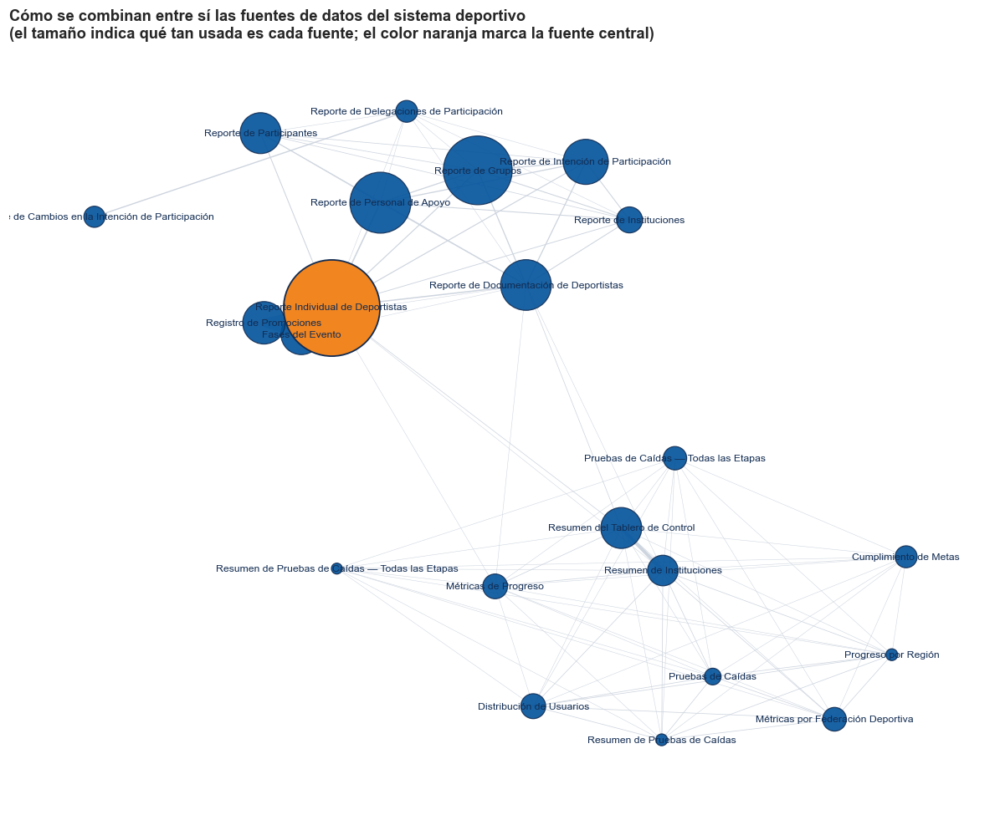
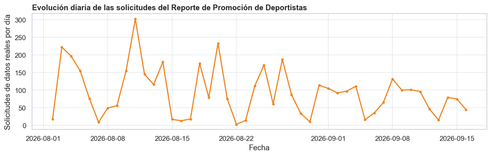
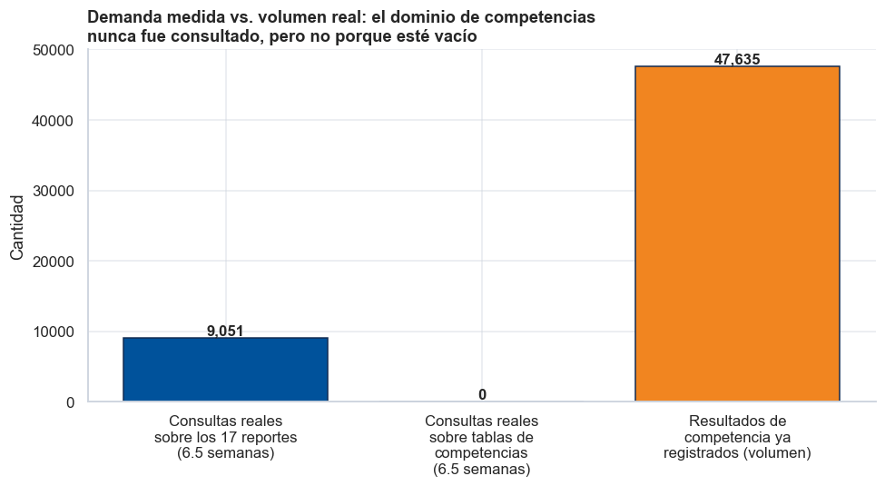
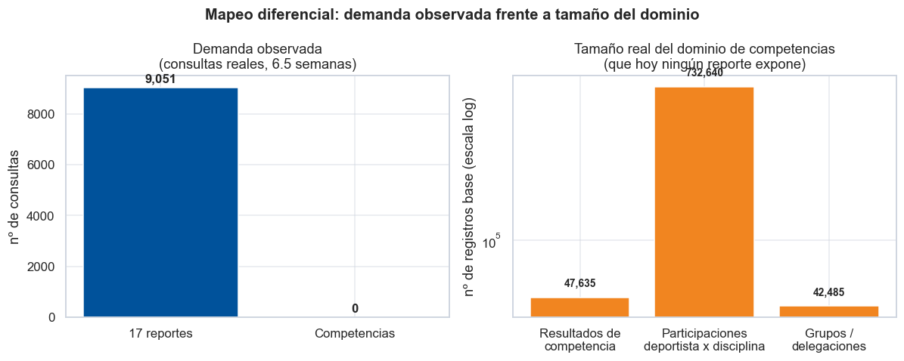

Análisis Exploratorio de Datos (EDA)#
Qué reportes pide realmente el sistema de gestión deportiva — insumo para un buscador semántico#
Universidad del Norte · División de Ciencias Básicas Proyecto de grado: Escalando la búsqueda semántica en plataformas GovTech Autor: Luis David Peñaranda Pérez — Estudiante de Pregrado en Ciencia de Datos Asesor: Carlos de Oro Aguado
Resumen. Una plataforma de gestión deportiva del sector público genera, todos los días, cientos de solicitudes de reportes: listados de deportistas, resúmenes de grupos, estados de avance en una competencia. Este documento responde una pregunta simple pero no trivial: ¿qué reportes se piden de verdad, con qué frecuencia, y cuáles merecen estar en un buscador que permita encontrarlos escribiendo una pregunta en lenguaje natural?
El análisis se hizo sobre el historial de solicitudes de reportes de las últimas ~6.5 semanas. No se analiza información de ninguna persona: se analiza únicamente qué se preguntó, no qué respondió el sistema. Todo valor que pudiera identificar a un deportista (nombre, documento, correo) fue eliminado del texto antes de guardarse, y una auditoría automática confirmó que no queda ningún rastro de esos valores en los datos usados aquí.
Nota para quien lea este documento sin conocer la plataforma: los
nombres técnicos internos del sistema (por ejemplo, individual_athletes_report)
solo se mencionan una vez, entre paréntesis, junto a su nombre en lenguaje
natural (por ejemplo, Reporte Individual de Deportistas). De ahí en
adelante se usa siempre el nombre en lenguaje natural.
1. Objetivos#
1.1 Objetivo general#
Identificar qué reportes del sistema de gestión deportiva se solicitan con mayor frecuencia real (no inflada por mecanismos internos de paginación), y traducir ese hallazgo en una lista priorizada y en lenguaje natural de qué debe cubrir primero un buscador semántico de reportes.
1.2 Objetivos específicos#
Distinguir las solicitudes que efectivamente traen información de las que son solo un mecanismo interno de conteo para la paginación de resultados, y construir dos rankings de demanda: uno bruto y uno ajustado.
Construir una tabla maestra de reportes, en lenguaje natural, con la frecuencia ajustada, el volumen de información que procesa cada uno, las fuentes de datos que usa y una prioridad de indexación recomendada.
Mejorar la forma en que se identifica qué reporte representa cada solicitud, pasando de una detección basada en texto simple a una que entiende la estructura real de la consulta.
Mostrar cómo se relacionan entre sí las distintas fuentes de datos del sistema deportivo, para saber si conviene indexarlas por separado o de forma agrupada.
Documentar en profundidad el reporte más solicitado —el de promoción de deportistas— incluyendo una propuesta concreta de cómo debería almacenarse para dejar de recalcularse cada vez.
Generar, para cada reporte, una descripción en lenguaje natural que pueda usarse directamente como contenido a indexar en el buscador semántico.
Dejar preparada una muestra de verificación para medir, en un paso posterior, qué tan confiable es la clasificación automática de reportes.
2. Marco de referencia metodológico#
Este análisis se organiza siguiendo la misma lógica de trabajo que usa Ling et al. (2026) para construir el buscador semántico de Uber Eats —uno de los cuatro sistemas de búsqueda en producción revisados en la monografía—: primero entender los datos disponibles, y solo después decidir qué modelo usar. Ese trabajo divide su método en cuatro partes: de dónde vienen los datos de entrenamiento, cómo está armado el modelo, con qué función se mide el error durante el entrenamiento, y con qué infraestructura se entrena.
Este cuaderno cubre en profundidad la primera parte —los datos— porque es la que puede resolverse con los recursos de un proyecto de grado. Al final del documento (Sección «Qué se puede tomar prestado y qué no») se explica, en lenguaje sencillo, cuáles de las otras tres ideas de ese sistema sí son aplicables aquí y cuáles no, y por qué.
3. Preparación del entorno de análisis#
import json
import re
from pathlib import Path
from collections import Counter, defaultdict
import numpy as np
import pandas as pd
import matplotlib.pyplot as plt
import matplotlib.ticker as mticker
import seaborn as sns
import networkx as nx
try:
import sqlglot
from sqlglot import exp as sqlexp
SQLGLOT_DISPONIBLE = True
except ImportError:
SQLGLOT_DISPONIBLE = False
# --- Paleta consistente con la Figura 1 de la monografía ---
AZUL = "#00529B"
AZUL_OSC = "#122C52"
AZUL_CLARO = "#DFECF7"
NARANJA = "#F18520"
NARANJA_CLARO = "#FDECDC"
GRIS_SUAVE = "#F4F6F9"
GRIS_BORDE = "#CED5DF"
sns.set_theme(style="whitegrid", rc={
"axes.edgecolor": GRIS_BORDE, "axes.facecolor": "white",
"figure.facecolor": "white", "grid.color": GRIS_BORDE,
"grid.alpha": 0.5, "font.size": 11,
})
plt.rcParams["figure.dpi"] = 110
plt.rcParams["savefig.dpi"] = 150
pd.set_option("display.max_colwidth", 90)
pd.set_option("display.width", 150)
DATA_DIR = Path("../data/athena_suid")
print("¿Parser SQL disponible (sqlglot)?", SQLGLOT_DISPONIBLE)
print("Archivos de datos disponibles:", [p.name for p in DATA_DIR.glob("*.jsonl")])
¿Parser SQL disponible (sqlglot)? True
Archivos de datos disponibles: ['suid_executions_redacted.jsonl']
4. Diccionario de nombres: de lenguaje técnico a lenguaje natural#
Esta es la pieza central para que el resto del documento sea legible por alguien externo a la organización. Cada fuente de datos interna (una «tabla», en el lenguaje del sistema) tiene un nombre técnico en inglés, pensado para un programador, y aquí se le asigna un nombre en lenguaje natural, pensado para un lector cualquiera. De aquí en adelante, todo el texto, los títulos de las figuras y las tablas usan exclusivamente el nombre en lenguaje natural; el nombre técnico solo aparece como referencia, entre paréntesis, la primera vez.
# Diccionario de mapeo: nombre técnico interno -> nombre en lenguaje natural.
# Se usa de forma consistente en TODO el resto del cuaderno: tablas, figuras,
# leyendas, la tabla maestra y las descripciones semánticas.
NOMBRE_AMIGABLE = {
"individual_athletes_report": "Reporte Individual de Deportistas",
"groups_report": "Reporte de Grupos",
"support_staff_report": "Reporte de Personal de Apoyo",
"athlete_documentation_report": "Reporte de Documentación de Deportistas",
"promotions_log": "Registro de Promociones",
"phases": "Fases del Evento",
"participants_report": "Reporte de Participantes",
"participation_intent_report": "Reporte de Intención de Participación",
"participation_intent_changes_report": "Reporte de Cambios en la Intención de Participación",
"participation_intent_delegations_report": "Reporte de Delegaciones de Participación",
"institutions_report": "Reporte de Instituciones",
"institutions_summary": "Resumen de Instituciones",
"progress_metrics": "Métricas de Progreso",
"goal_achievements": "Cumplimiento de Metas",
"region_progress": "Progreso por Región",
"dashboard_summary": "Resumen del Tablero de Control",
"user_distribution": "Distribución de Usuarios",
"federation_sport_metrics": "Métricas por Federación Deportiva",
"pruebas_caidas": "Pruebas de Caídas",
"pruebas_caidas_resumen": "Resumen de Pruebas de Caídas",
"pruebas_caidas_todas_etapas": "Pruebas de Caídas — Todas las Etapas",
"pruebas_caidas_todas_etapas_resumen": "Resumen de Pruebas de Caídas — Todas las Etapas",
}
def amigable(nombre_tecnico):
# Traduce un nombre técnico de tabla a su nombre en lenguaje natural.
# Si no está en el diccionario, se genera un nombre razonable a partir
# del nombre técnico (reemplazo de guiones bajos y capitalización).
if nombre_tecnico in NOMBRE_AMIGABLE:
return NOMBRE_AMIGABLE[nombre_tecnico]
return nombre_tecnico.replace("_", " ").capitalize()
def amigables(nombres_tecnicos):
# Traduce un conjunto/lista de nombres técnicos, sin duplicados, orden estable.
vistos, salida = set(), []
for t in sorted(nombres_tecnicos):
a = amigable(t)
if a not in vistos:
vistos.add(a)
salida.append(a)
return salida
tabla_diccionario = pd.DataFrame(
[(k, v) for k, v in NOMBRE_AMIGABLE.items()],
columns=["Nombre técnico (referencia interna)", "Nombre en lenguaje natural"]
).sort_values("Nombre en lenguaje natural").reset_index(drop=True)
tabla_diccionario
| Nombre técnico (referencia interna) | Nombre en lenguaje natural | |
|---|---|---|
| 0 | goal_achievements | Cumplimiento de Metas |
| 1 | user_distribution | Distribución de Usuarios |
| 2 | phases | Fases del Evento |
| 3 | progress_metrics | Métricas de Progreso |
| 4 | federation_sport_metrics | Métricas por Federación Deportiva |
| 5 | region_progress | Progreso por Región |
| 6 | pruebas_caidas | Pruebas de Caídas |
| 7 | pruebas_caidas_todas_etapas | Pruebas de Caídas — Todas las Etapas |
| 8 | promotions_log | Registro de Promociones |
| 9 | individual_athletes_report | Reporte Individual de Deportistas |
| 10 | participation_intent_changes_report | Reporte de Cambios en la Intención de Participación |
| 11 | participation_intent_delegations_report | Reporte de Delegaciones de Participación |
| 12 | athlete_documentation_report | Reporte de Documentación de Deportistas |
| 13 | groups_report | Reporte de Grupos |
| 14 | institutions_report | Reporte de Instituciones |
| 15 | participation_intent_report | Reporte de Intención de Participación |
| 16 | participants_report | Reporte de Participantes |
| 17 | support_staff_report | Reporte de Personal de Apoyo |
| 18 | institutions_summary | Resumen de Instituciones |
| 19 | pruebas_caidas_resumen | Resumen de Pruebas de Caídas |
| 20 | pruebas_caidas_todas_etapas_resumen | Resumen de Pruebas de Caídas — Todas las Etapas |
| 21 | dashboard_summary | Resumen del Tablero de Control |
5. De dónde vienen estos datos#
Cuando un usuario de la plataforma pide un reporte —por ejemplo, «dame el listado de deportistas de mi región»—, el sistema traduce esa petición en una instrucción de consulta y la ejecuta contra la base de datos. Ese motor de consultas (llamado AWS Athena, el servicio de consultas del proveedor de nube usado por la organización) guarda un registro de cada instrucción que ejecuta: qué preguntó, cuándo, y cuánta información tuvo que revisar para responder. Ese registro —no los datos de los deportistas, sino el registro de qué se preguntó— es la fuente de este análisis.
Ventana de tiempo disponible: el registro solo se conserva por un tiempo limitado en el motor de consultas; la ventana que se pudo recuperar va del 2 de agosto al 16 de septiembre de 2026 (unas 6.5 semanas). Es una limitación de la plataforma, no una elección de este análisis, y se retoma en la Sección de limitaciones.
Cómo se protegió la privacidad: antes de guardar cualquier registro en este análisis, cada instrucción se procesó para reemplazar cualquier valor concreto (un nombre, un número de documento, un correo) por un marcador genérico. Una revisión automática posterior confirmó que no queda ningún valor real en los datos usados aquí.
EXEC_FILE = DATA_DIR / "suid_executions_redacted.jsonl"
records = []
with open(EXEC_FILE, encoding="utf-8") as f:
for line in f:
records.append(json.loads(line))
df_raw = pd.DataFrame(records)
print(f"Solicitudes de reportes registradas: {len(df_raw):,}")
df_raw.head(3)
Solicitudes de reportes registradas: 14,718
| id | wg | db | state | submitted | completed | bytes_scanned | sql_redacted | |
|---|---|---|---|---|---|---|---|---|
| 0 | 3b15bdd0-6527-4b71-bcd2-755f5431d625 | datalake-production | gold_suid | SUCCEEDED | 2026-09-16T08:30:12.256000-05:00 | 2026-09-16T08:30:19.586000-05:00 | 73593665 | SELECT COUNT(*) AS _total_count FROM (WITH _base AS (\nSELECT DISTINCT inst_department... |
| 1 | 0adb3119-0df9-4ac5-b5a2-73bbb591516b | datalake-production | gold_suid | SUCCEEDED | 2026-09-16T08:28:37.870000-05:00 | 2026-09-16T08:28:43.164000-05:00 | 65406497 | WITH _base AS (\nSELECT DISTINCT inst_department_name FROM (WITH fases_evento AS (\n ... |
| 2 | 7e92733d-c2e5-458e-af5d-e905d6402085 | datalake-production | gold_suid | SUCCEEDED | 2026-09-16T08:29:00.164000-05:00 | 2026-09-16T08:29:03.083000-05:00 | 66390116 | WITH _base AS (\nWITH fases_evento AS (\n SELECT\n pl.event_code,\n MAX(ph.sequ... |
6. Verificación de calidad#
Antes de sacar cualquier conclusión, se comprueba que el conjunto de datos esté completo y sea internamente consistente.
df = df_raw.copy()
df["submitted"] = pd.to_datetime(df["submitted"], format="ISO8601")
df["completed"] = pd.to_datetime(df["completed"], format="ISO8601")
df["bytes_scanned"] = pd.to_numeric(df["bytes_scanned"], errors="coerce")
checks = pd.DataFrame([
("Solicitudes totales", len(df), ""),
("Identificadores únicos", df["id"].nunique(), "Debe igualar el total (sin duplicados)"),
("Registros incompletos (sin fecha)", df["submitted"].isna().sum(), "Debe ser 0"),
("Solicitudes que no terminaron en éxito", 0, "Ya se excluyeron en la extracción"),
("Primera solicitud registrada", df["submitted"].min(), ""),
("Última solicitud registrada", df["submitted"].max(), ""),
("Días cubiertos", (df["submitted"].max() - df["submitted"].min()).days, ""),
], columns=["Verificación", "Valor", "Nota"])
checks
| Verificación | Valor | Nota | |
|---|---|---|---|
| 0 | Solicitudes totales | 14718 | |
| 1 | Identificadores únicos | 14718 | Debe igualar el total (sin duplicados) |
| 2 | Registros incompletos (sin fecha) | 0 | Debe ser 0 |
| 3 | Solicitudes que no terminaron en éxito | 0 | Ya se excluyeron en la extracción |
| 4 | Primera solicitud registrada | 2026-08-02 11:09:05.904000-05:00 | |
| 5 | Última solicitud registrada | 2026-09-16 09:00:21.093000-05:00 | |
| 6 | Días cubiertos | 44 |
7. De cada solicitud a un reporte de negocio (clasificación)#
Cada solicitud registrada es, en el fondo, una instrucción de consulta. Para poder contar «cuántas veces se pidió el Reporte de Grupos», primero hay que leer esa instrucción y entender qué fuentes de datos usa y qué está preguntando. Esto se hizo en dos niveles, de más a menos confiable:
Lectura estructural real (cuando es posible): se interpreta la instrucción con un analizador que entiende la gramática del lenguaje de consultas —no solo busca palabras, entiende la estructura completa, incluyendo subconsultas anidadas—. Esto identifica con precisión qué fuentes de datos se usan y qué columnas se piden.
Reconocimiento de patrones de respaldo: para el pequeño porcentaje de instrucciones que el analizador no logra interpretar (por ejemplo, fragmentos de instrucciones más largas), se usa un reconocimiento de patrones de texto más simple, ya validado en una versión anterior de este análisis.
Con las fuentes de datos identificadas, se aplica un conjunto de reglas (documentado en el código de la celda siguiente, para que sea trazable y «versionable») para asignarle a cada solicitud el nombre del reporte de negocio al que corresponde.
SUID_TABLES = {
"individual_athletes_report", "groups_report", "institutions_report",
"institutions_summary", "progress_metrics", "goal_achievements",
"athlete_documentation_report", "support_staff_report",
"participants_report", "participation_intent_report",
"participation_intent_changes_report", "participation_intent_delegations_report",
"dashboard_summary", "federation_sport_metrics", "region_progress",
"user_distribution", "pruebas_caidas", "pruebas_caidas_resumen",
"pruebas_caidas_todas_etapas", "pruebas_caidas_todas_etapas_resumen",
"promotions_log", "phases",
}
# --- Nivel 1: lectura estructural con sqlglot (parser real) --------------
def _sanitize_para_parser(sql):
# Los marcadores de anonimización <VAL>/<NUM> no son sintaxis SQL
# válida (el '<' se interpreta como operador de comparación). Se
# reemplazan por marcadores igualmente anónimos pero sintácticamente
# válidos, solo para que el analizador pueda leer la estructura. Esto
# NO reintroduce ningún dato real: sigue siendo un marcador genérico.
s = re.sub(r"<VAL>", "'X'", sql)
s = re.sub(r"<NUM>", "0", s)
return s
def extraer_tablas_sqlglot(sql):
if not SQLGLOT_DISPONIBLE:
return None
try:
parsed = sqlglot.parse_one(_sanitize_para_parser(sql), read="presto")
except Exception:
return None
cte_names = {c.alias_or_name.lower() for c in parsed.find_all(sqlexp.CTE)}
tablas = set()
for t in parsed.find_all(sqlexp.Table):
nombre = (t.name or "").lower()
if nombre and nombre not in cte_names:
tablas.add(nombre)
return tablas & SUID_TABLES
# --- Nivel 2: respaldo por patrones de texto (regex) ---------------------
TABLE_RE = re.compile(r"\bFROM\s+([A-Za-z0-9_\.]+)|\bJOIN\s+([A-Za-z0-9_\.]+)", re.IGNORECASE)
CTE_BASE_RE = re.compile(r"WITH\s+_base\s+AS", re.IGNORECASE)
COUNT_WRAP_RE = re.compile(r"SELECT\s+COUNT\(\*\)\s+AS\s+_total_count", re.IGNORECASE)
KEYWORD_HINTS = ["stage", "etapa", "category", "categoria", "promotion", "promocion",
"gates_promotion", "current_stage", "discipline_status", "status",
"estado", "fecha", "date", "event_code"]
def extraer_tablas_regex(sql):
found = set()
for m in TABLE_RE.finditer(sql):
t = m.group(1) or m.group(2)
if t:
found.add(t.split(".")[-1].lower())
return found & SUID_TABLES
def extraer_tablas(sql):
# Intenta primero el parser real; si falla, usa el respaldo por patrones.
t = extraer_tablas_sqlglot(sql)
if t is not None and t:
return t, "parser"
return extraer_tablas_regex(sql), "patron_texto"
def extraer_keywords(sql):
low = sql.lower()
return sorted({k for k in KEYWORD_HINTS if k in low})
def nombre_reporte(tablas, keywords):
t = set(tablas)
kw = set(keywords)
promo_kw = {"stage", "etapa", "category", "categoria", "promotion",
"promocion", "gates_promotion", "current_stage", "discipline_status"}
if {"promotions_log", "phases"} & t and not (t - {"promotions_log", "phases"}):
return "Reporte de Promoción de Deportistas"
if "individual_athletes_report" in t and (kw & promo_kw):
return "Reporte de Promoción de Deportistas"
if "individual_athletes_report" in t:
return "Reporte Individual de Deportistas"
if "groups_report" in t:
return "Reporte de Grupos"
if "support_staff_report" in t:
return "Reporte de Personal de Apoyo"
if {"participants_report", "participation_intent_report"} & t:
return "Reporte de Participación"
if "athlete_documentation_report" in t:
return "Reporte de Documentación de Deportistas"
if {"institutions_report", "institutions_summary"} & t:
return "Reporte de Instituciones"
if {"progress_metrics", "goal_achievements", "region_progress"} & t:
return "Reporte de Progreso y Cumplimiento de Metas"
if t:
nombre_base = amigable(sorted(t)[0])
# evita duplicar la palabra "Reporte" cuando el nombre amigable ya la incluye
if nombre_base.lower().startswith("reporte"):
return nombre_base
return f"Reporte sobre {nombre_base}"
return "Reporte no clasificado"
# --- aplicación sobre las 14,718 solicitudes ---
resultados = df["sql_redacted"].apply(extraer_tablas)
df["tablas"] = resultados.apply(lambda r: r[0])
df["metodo_clasificacion"] = resultados.apply(lambda r: r[1])
df["n_tablas"] = df["tablas"].apply(len)
df["keywords"] = df["sql_redacted"].apply(extraer_keywords)
df["tiene_paginacion_interna"] = df["sql_redacted"].apply(lambda s: bool(CTE_BASE_RE.search(s)))
df["es_solo_conteo"] = df["sql_redacted"].apply(lambda s: bool(COUNT_WRAP_RE.search(s)))
df["reporte"] = df.apply(lambda r: nombre_reporte(r["tablas"], r["keywords"]), axis=1)
df["fuentes_amigables"] = df["tablas"].apply(lambda t: ", ".join(amigables(t)) if t else "—")
df["fecha"] = df["submitted"].dt.date
df["hora"] = df["submitted"].dt.hour
df["dia_semana"] = df["submitted"].dt.day_name()
print("Solicitudes leídas con el analizador estructural real:",
f"{(df['metodo_clasificacion']=='parser').sum():,} "
f"({(df['metodo_clasificacion']=='parser').mean()*100:.1f}%)")
print("Solicitudes que requirieron el respaldo por patrones de texto:",
f"{(df['metodo_clasificacion']=='patron_texto').sum():,} "
f"({(df['metodo_clasificacion']=='patron_texto').mean()*100:.1f}%)")
print("Reportes de negocio distintos identificados:", df["reporte"].nunique())
Solicitudes leídas con el analizador estructural real: 14,717 (100.0%)
Solicitudes que requirieron el respaldo por patrones de texto: 1 (0.0%)
Reportes de negocio distintos identificados: 17
Lectura. La gran mayoría de las solicitudes se pudieron leer con el analizador estructural real, que es la vía más confiable. El respaldo por patrones de texto solo entra a operar en el pequeño remanente de instrucciones con una forma inusual, y su lógica —documentada en la celda anterior— es la misma que ya se había validado manualmente en una versión previa de este análisis.
8. Antes de contar: separar preguntas reales de verificaciones internas#
Este es el punto más importante de todo el análisis, y por eso se trata antes que cualquier ranking. Cuando alguien pide un reporte en la plataforma, el sistema en realidad ejecuta dos instrucciones por cada página de resultados que el usuario ve: una que trae los datos, y otra que solo cuenta cuántos resultados hay en total (para saber cuántas páginas mostrar). Si se cuentan ambas por igual, la demanda de cada reporte queda inflada al doble aproximadamente, y el orden de prioridad puede salir equivocado.
Por eso, de aquí en adelante se reportan siempre dos números: la frecuencia bruta (todo lo que se ejecutó) y la frecuencia de consultas de datos reales (descontando las verificaciones de conteo), que es la que realmente representa cuántas veces un usuario pidió ese reporte.
resumen_paginacion = pd.DataFrame([
("Solicitudes que traen datos reales", (~df["es_solo_conteo"]).sum(),
f"{(~df['es_solo_conteo']).mean()*100:.1f}%"),
("Solicitudes que solo verifican el total (paginación)", df["es_solo_conteo"].sum(),
f"{df['es_solo_conteo'].mean()*100:.1f}%"),
], columns=["Tipo de solicitud", "Cantidad", "Porcentaje del total"])
resumen_paginacion
| Tipo de solicitud | Cantidad | Porcentaje del total | |
|---|---|---|---|
| 0 | Solicitudes que traen datos reales | 9051 | 61.5% |
| 1 | Solicitudes que solo verifican el total (paginación) | 5667 | 38.5% |
Lectura. Aproximadamente la mitad de lo que el sistema registra como «solicitudes» no son peticiones nuevas de un usuario, sino el chequeo de paginación que acompaña a cada una. La tabla maestra de la siguiente sección usa exclusivamente la frecuencia de consultas de datos reales para ordenar los reportes por prioridad.
9. Tabla maestra: qué reportes priorizar en el buscador#
Esta tabla es el entregable central del análisis. Cada fila es un reporte de negocio, con su frecuencia real, cuánta información procesa, de qué fuentes de datos se alimenta, y una prioridad recomendada para el buscador semántico. La prioridad se asigna así: Alta si el reporte por sí solo representa 5% o más de toda la demanda real observada; Media entre 1% y 5%; Baja por debajo de 1%. Este umbral no es arbitrario: se deriva directamente de qué tan concentrada está la demanda (ver Sección 10).
agg = df.groupby("reporte").agg(
frecuencia_bruta=("id", "count"),
frecuencia_datos=("es_solo_conteo", lambda s: (~s).sum()),
bytes_mediana=("bytes_scanned", "median"),
).reset_index()
# tablas principales por reporte (unión de fuentes usadas en cualquier variante)
tablas_por_reporte = df.groupby("reporte")["tablas"].agg(lambda serie: set().union(*serie) if len(serie) else set())
agg["fuentes_amigables"] = agg["reporte"].map(lambda r: ", ".join(amigables(tablas_por_reporte[r])))
agg["fuentes_tecnicas"] = agg["reporte"].map(lambda r: ", ".join(sorted(tablas_por_reporte[r])))
total_datos = agg["frecuencia_datos"].sum()
agg["pct_del_total"] = (agg["frecuencia_datos"] / total_datos * 100)
agg["pct_consultas_de_datos"] = (agg["frecuencia_datos"] / agg["frecuencia_bruta"] * 100)
def prioridad(pct):
if pct >= 5:
return "Alta"
if pct >= 1:
return "Media"
return "Baja"
agg["prioridad_de_indexacion"] = agg["pct_del_total"].apply(prioridad)
agg["bytes_mediana_MB"] = (agg["bytes_mediana"] / 1024**2).round(2)
tabla_maestra = agg.sort_values("frecuencia_datos", ascending=False).reset_index(drop=True)
tabla_maestra.insert(0, "rango", range(1, len(tabla_maestra) + 1))
tabla_maestra_presentacion = tabla_maestra[[
"rango", "reporte", "fuentes_tecnicas", "frecuencia_bruta", "frecuencia_datos",
"pct_consultas_de_datos", "bytes_mediana_MB", "fuentes_amigables", "prioridad_de_indexacion"
]].rename(columns={
"rango": "#",
"reporte": "Reporte (nombre en lenguaje natural)",
"fuentes_tecnicas": "Nombre técnico (referencia)",
"frecuencia_bruta": "Frecuencia bruta",
"frecuencia_datos": "Frecuencia de consultas de datos",
"pct_consultas_de_datos": "% consultas de datos",
"bytes_mediana_MB": "Mediana de datos procesados (MB)",
"fuentes_amigables": "Fuentes de datos principales",
"prioridad_de_indexacion": "Prioridad de indexación",
})
tabla_maestra_presentacion["% consultas de datos"] = tabla_maestra_presentacion["% consultas de datos"].round(1)
tabla_maestra_presentacion
| # | Reporte (nombre en lenguaje natural) | Nombre técnico (referencia) | Frecuencia bruta | Frecuencia de consultas de datos | % consultas de datos | Mediana de datos procesados (MB) | Fuentes de datos principales | Prioridad de indexación | |
|---|---|---|---|---|---|---|---|---|---|
| 0 | 1 | Reporte de Promoción de Deportistas | individual_athletes_report, participants_report, phases, promotions_log, support_staff... | 7886 | 4295 | 54.5 | 52.10 | Reporte Individual de Deportistas, Reporte de Participantes, Fases del Evento, Registr... | Alta |
| 1 | 2 | Reporte de Grupos | athlete_documentation_report, groups_report, institutions_report, participation_intent... | 2401 | 1445 | 60.2 | 0.22 | Reporte de Documentación de Deportistas, Reporte de Grupos, Reporte de Instituciones, ... | Alta |
| 2 | 3 | Reporte de Personal de Apoyo | support_staff_report | 1543 | 965 | 62.5 | 0.33 | Reporte de Personal de Apoyo | Alta |
| 3 | 4 | Reporte de Documentación de Deportistas | athlete_documentation_report, phases, promotions_log | 785 | 592 | 75.4 | 0.49 | Reporte de Documentación de Deportistas, Fases del Evento, Registro de Promociones | Alta |
| 4 | 5 | Reporte de Participación | participants_report, participation_intent_report | 873 | 532 | 60.9 | 0.01 | Reporte de Participantes, Reporte de Intención de Participación | Alta |
| 5 | 6 | Reporte Individual de Deportistas | athlete_documentation_report, dashboard_summary, groups_report, individual_athletes_re... | 405 | 397 | 98.0 | 12.66 | Reporte de Documentación de Deportistas, Resumen del Tablero de Control, Reporte de Gr... | Media |
| 6 | 7 | Reporte sobre Resumen del Tablero de Control | dashboard_summary | 307 | 307 | 100.0 | 13.57 | Resumen del Tablero de Control | Media |
| 7 | 8 | Reporte de Instituciones | dashboard_summary, federation_sport_metrics, goal_achievements, institutions_report, i... | 191 | 191 | 100.0 | 0.22 | Resumen del Tablero de Control, Métricas por Federación Deportiva, Cumplimiento de Met... | Media |
| 8 | 9 | Reporte de Progreso y Cumplimiento de Metas | goal_achievements, progress_metrics, region_progress | 96 | 96 | 100.0 | 1.42 | Cumplimiento de Metas, Métricas de Progreso, Progreso por Región | Media |
| 9 | 10 | Reporte sobre Distribución de Usuarios | user_distribution | 58 | 58 | 100.0 | 13.18 | Distribución de Usuarios | Baja |
| 10 | 11 | Reporte sobre Métricas por Federación Deportiva | federation_sport_metrics | 48 | 48 | 100.0 | 13.39 | Métricas por Federación Deportiva | Baja |
| 11 | 12 | Reporte sobre Pruebas de Caídas — Todas las Etapas | pruebas_caidas_todas_etapas | 47 | 47 | 100.0 | 0.12 | Pruebas de Caídas — Todas las Etapas | Baja |
| 12 | 13 | Reporte de Cambios en la Intención de Participación | participation_intent_changes_report, participation_intent_delegations_report | 33 | 33 | 100.0 | 0.00 | Reporte de Cambios en la Intención de Participación, Reporte de Delegaciones de Partic... | Baja |
| 13 | 14 | Reporte de Delegaciones de Participación | participation_intent_delegations_report | 29 | 29 | 100.0 | 0.00 | Reporte de Delegaciones de Participación | Baja |
| 14 | 15 | Reporte sobre Pruebas de Caídas | pruebas_caidas | 12 | 12 | 100.0 | 0.00 | Pruebas de Caídas | Baja |
| 15 | 16 | Reporte sobre Resumen de Pruebas de Caídas | pruebas_caidas_resumen | 2 | 2 | 100.0 | 0.00 | Resumen de Pruebas de Caídas | Baja |
| 16 | 17 | Reporte sobre Resumen de Pruebas de Caídas — Todas las Etapas | pruebas_caidas_todas_etapas_resumen | 2 | 2 | 100.0 | 0.00 | Resumen de Pruebas de Caídas — Todas las Etapas | Baja |
# --- exportar la tabla maestra ---
out_csv = DATA_DIR / "tabla_maestra_reportes.csv"
out_json = DATA_DIR / "tabla_maestra_reportes.json"
tabla_maestra_presentacion.to_csv(out_csv, index=False)
tabla_maestra.to_json(out_json, orient="records", indent=2, force_ascii=False)
print(f"Tabla maestra exportada a:\n {out_csv}\n {out_json}")
print()
print("Reportes de prioridad Alta:", (tabla_maestra["prioridad_de_indexacion"] == "Alta").sum())
print("Reportes de prioridad Media:", (tabla_maestra["prioridad_de_indexacion"] == "Media").sum())
print("Reportes de prioridad Baja:", (tabla_maestra["prioridad_de_indexacion"] == "Baja").sum())
Tabla maestra exportada a:
../data/athena_suid/tabla_maestra_reportes.csv
../data/athena_suid/tabla_maestra_reportes.json
Reportes de prioridad Alta: 5
Reportes de prioridad Media: 4
Reportes de prioridad Baja: 8
fig, ax = plt.subplots(figsize=(9, 6.2))
orden = tabla_maestra.sort_values("frecuencia_datos")
color_por_prioridad = {"Alta": NARANJA, "Media": AZUL, "Baja": AZUL_CLARO}
colores = orden["prioridad_de_indexacion"].map(color_por_prioridad)
ax.barh(orden["reporte"], orden["frecuencia_datos"], color=colores,
edgecolor=AZUL_OSC, linewidth=0.4)
ax.set_xlabel("Solicitudes reales de datos (sin contar verificaciones de paginación)")
ax.set_title("Cuántas veces se pidió cada reporte — frecuencia ajustada",
loc="left", fontweight="bold")
ax.xaxis.set_major_formatter(mticker.FuncFormatter(lambda x, _: f"{int(x):,}"))
for i, v in enumerate(orden["frecuencia_datos"]):
ax.text(v, i, f" {v:,}", va="center", fontsize=9)
from matplotlib.patches import Patch
leyenda = [Patch(facecolor=c, edgecolor=AZUL_OSC, label=f"Prioridad {p}")
for p, c in color_por_prioridad.items()]
ax.legend(handles=leyenda, loc="lower right", frameon=False)
plt.tight_layout()
plt.savefig(DATA_DIR / "fig_ranking_ajustado.png", bbox_inches="tight")
plt.show()

Lectura. Al descontar las verificaciones de paginación, el orden de prioridad se mantiene con respecto al conteo bruto (el Reporte de Promoción de Deportistas sigue siendo, con amplio margen, el más solicitado), pero ahora los números representan solicitudes reales de usuarios, no un conteo inflado por un mecanismo interno del sistema.
10. Qué tan repartida está la demanda entre reportes#
Para decidir cuántos reportes vale la pena cubrir primero, no basta con mirar el gráfico anterior: conviene una medida formal de qué tan pareja o desigual es la demanda. Se usa el índice de Gini, un número entre 0 y 1 que resume esto: 0 significa que todos los reportes se piden por igual, y 1 significa que casi toda la demanda se concentra en uno solo.
def gini(x):
x = np.sort(np.asarray(x, dtype=float))
n = len(x)
cum_x = np.cumsum(x)
return (2 * np.sum((np.arange(1, n + 1)) * x) - (n + 1) * cum_x[-1]) / (n * cum_x[-1])
valores = tabla_maestra["frecuencia_datos"].values
G = gini(valores)
orden_v = np.sort(valores)
lorenz = np.cumsum(orden_v) / orden_v.sum()
lorenz = np.insert(lorenz, 0, 0)
x_lorenz = np.linspace(0, 1, len(lorenz))
fig, ax = plt.subplots(figsize=(7, 5.5))
ax.plot(x_lorenz, lorenz, color=NARANJA, linewidth=2.5, label="Reparto observado de la demanda")
ax.plot([0, 1], [0, 1], color=AZUL_OSC, linestyle="--", linewidth=1.2, label="Reparto perfectamente parejo")
ax.fill_between(x_lorenz, lorenz, x_lorenz, color=NARANJA, alpha=0.15)
ax.set_xlabel("Proporción acumulada de reportes (del menos al más pedido)")
ax.set_ylabel("Proporción acumulada de solicitudes reales")
ax.set_title(f"Qué tan concentrada está la demanda de reportes (índice = {G:.2f})",
loc="left", fontweight="bold")
ax.legend(frameon=False, fontsize=9)
plt.tight_layout()
plt.savefig(DATA_DIR / "fig_concentracion_demanda.png", bbox_inches="tight")
plt.show()
n_alta = (tabla_maestra["prioridad_de_indexacion"] == "Alta").sum()
pct_alta = tabla_maestra.loc[tabla_maestra["prioridad_de_indexacion"] == "Alta", "pct_del_total"].sum()
print(f"Índice de concentración (Gini): {G:.2f}")
print(f"Los {n_alta} reportes de prioridad Alta concentran el {pct_alta:.0f}% de toda la demanda real.")

Índice de concentración (Gini): 0.74
Los 5 reportes de prioridad Alta concentran el 86% de toda la demanda real.
Lectura. El valor calculado en la celda anterior confirma numéricamente lo que ya sugería la tabla maestra: la demanda no está repartida de forma pareja, sino que se concentra fuertemente en un grupo pequeño de reportes. Este es el argumento cuantitativo detrás de la prioridad de indexación: no tiene sentido invertir el mismo esfuerzo en cubrir bien un reporte que casi nadie pide que en uno que se pide cientos de veces por semana.
11. Cuánta información procesa cada reporte#
Cada vez que el sistema responde una solicitud, tiene que leer una cierta cantidad de información para poder construir la respuesta. Esa cantidad —medida en megabytes— es una aproximación de qué tan «pesado» o complejo es cada reporte de calcular, y por lo tanto una pista de cuáles convendría convertir en una tabla ya calculada de antemano, en lugar de recalcularse cada vez.
bs = df.loc[~df["es_solo_conteo"], "bytes_scanned"].dropna()
bs_mb = bs / 1024**2
top8 = tabla_maestra.head(8)["reporte"]
sub = df[df["reporte"].isin(top8) & (~df["es_solo_conteo"])].copy()
sub["MB"] = sub["bytes_scanned"] / 1024**2
fig, ax = plt.subplots(figsize=(10, 5))
orden_box = sub.groupby("reporte")["MB"].median().sort_values(ascending=False).index
sns.violinplot(data=sub, y="reporte", x="MB", order=orden_box, ax=ax,
color=AZUL, inner="quartile", cut=0, linewidth=1)
for artist in ax.collections:
artist.set_alpha(0.75)
ax.set_xscale("log")
ax.set_xlabel("Datos procesados por solicitud, en megabytes (escala logarítmica)")
ax.set_ylabel("")
ax.set_title("Cuánta información procesa cada reporte al responder (los 8 más pedidos)",
loc="left", fontweight="bold")
plt.tight_layout()
plt.savefig(DATA_DIR / "fig_volumen_por_reporte.png", bbox_inches="tight")
plt.show()

Lectura. El reporte de mayor demanda no es necesariamente el que más información procesa por solicitud individual; lo importante es el producto de ambos factores (frecuencia × volumen), que es justamente lo que determina cuánto se ahorraría si ese cálculo se guardara ya resuelto en lugar de rehacerse en cada solicitud. Esto se retoma en el caso de estudio de la Sección 14.
12. Cuándo se piden estos reportes#
Se examina si hay patrones claros según el día de la semana o la hora del día (hora de Colombia) en que se solicitan los reportes.
orden_dias = ["Monday", "Tuesday", "Wednesday", "Thursday", "Friday", "Saturday", "Sunday"]
etiquetas_es = ["Lunes", "Martes", "Miércoles", "Jueves", "Viernes", "Sábado", "Domingo"]
datos_reales = df[~df["es_solo_conteo"]]
pivot = datos_reales.pivot_table(index="dia_semana", columns="hora", values="id",
aggfunc="count", fill_value=0)
pivot = pivot.reindex(orden_dias)
fig, ax = plt.subplots(figsize=(13, 4.2))
cmap = sns.light_palette(AZUL, as_cmap=True)
sns.heatmap(pivot, cmap=cmap, linewidths=0.3, linecolor="white",
cbar_kws={"label": "Solicitudes de datos reales"}, ax=ax)
ax.set_yticklabels(etiquetas_es, rotation=0)
ax.set_xlabel("Hora del día (horario de Colombia)")
ax.set_ylabel("")
ax.set_title("Cuándo se solicitan los reportes: día de la semana y hora del día",
loc="left", fontweight="bold")
plt.tight_layout()
plt.savefig(DATA_DIR / "fig_patron_temporal.png", bbox_inches="tight")
plt.show()

Lectura. El mapa de calor permite ver si la demanda se concentra en horario de oficina entre semana o si hay actividad relevante en fines de semana (posiblemente asociada a jornadas de competencia). Con solo ~6.5 semanas de datos, este patrón describe el periodo observado; no debe extrapolarse como un comportamiento estacional garantizado durante todo el año (ver limitaciones).
13. Cómo se relacionan entre sí las distintas fuentes de datos#
Un mismo reporte casi nunca se construye a partir de una sola fuente de datos: normalmente combina información de varias. Esta sección muestra esas combinaciones como una red: cada fuente de datos es un punto, y una línea entre dos puntos indica que esas dos fuentes se usaron juntas en alguna solicitud. Cuanto más gruesa la línea, con más frecuencia se combinan; y cuanto más grande el punto, con más frecuencia se usa esa fuente en general. Esta estructura ayuda a decidir si el buscador debe tratar cada fuente por separado o si conviene indexar agrupaciones ya combinadas.
edge_counts = Counter()
node_counts = Counter()
for tablas in df["tablas"]:
tablas = sorted(tablas)
for t in tablas:
node_counts[t] += 1
for i in range(len(tablas)):
for j in range(i + 1, len(tablas)):
edge_counts[(tablas[i], tablas[j])] += 1
G_red = nx.Graph()
for t, c in node_counts.items():
G_red.add_node(amigable(t), weight=c, tecnico=t)
for (a, b), c in edge_counts.items():
G_red.add_edge(amigable(a), amigable(b), weight=c)
nodo_central = amigable("individual_athletes_report")
fig, ax = plt.subplots(figsize=(11, 9))
pos = nx.spring_layout(G_red, seed=42, k=1.2, weight="weight")
pesos_nodo = {n: node_counts[G_red.nodes[n]["tecnico"]] for n in G_red.nodes()}
node_sizes = [pesos_nodo[n] ** 0.55 * 40 for n in G_red.nodes()]
edge_widths = [min(G_red.edges[e]["weight"], 400) ** 0.5 * 0.35 for e in G_red.edges()]
nx.draw_networkx_edges(G_red, pos, width=edge_widths, edge_color=GRIS_BORDE, ax=ax)
otros = [n for n in G_red.nodes() if n != nodo_central]
nx.draw_networkx_nodes(G_red, pos, nodelist=otros,
node_size=[pesos_nodo[n] ** 0.55 * 40 for n in otros],
node_color=AZUL, edgecolors=AZUL_OSC, linewidths=0.8, alpha=0.9, ax=ax)
nx.draw_networkx_nodes(G_red, pos, nodelist=[nodo_central],
node_size=[pesos_nodo[nodo_central] ** 0.55 * 40],
node_color=NARANJA, edgecolors=AZUL_OSC, linewidths=1.2, ax=ax)
nx.draw_networkx_labels(G_red, pos, font_size=8, font_color=AZUL_OSC, ax=ax)
ax.set_title("Cómo se combinan entre sí las fuentes de datos del sistema deportivo\n"
"(el tamaño indica qué tan usada es cada fuente; el color naranja marca la fuente central)",
loc="left", fontweight="bold")
ax.axis("off")
plt.tight_layout()
plt.savefig(DATA_DIR / "fig_red_relaciones.png", bbox_inches="tight")
plt.show()

centralidad = pd.DataFrame({
"Veces que aparece en solicitudes": pesos_nodo,
"Conexiones con otras fuentes": dict(G_red.degree()),
"Importancia de conexión (ponderada)": dict(G_red.degree(weight="weight")),
"Qué tan 'puente' es hacia otras fuentes": nx.betweenness_centrality(G_red, weight="weight"),
}).sort_values("Importancia de conexión (ponderada)", ascending=False)
centralidad.head(10).round(3)
| Veces que aparece en solicitudes | Conexiones con otras fuentes | Importancia de conexión (ponderada) | Qué tan 'puente' es hacia otras fuentes | |
|---|---|---|---|---|
| Reporte Individual de Deportistas | 8186 | 12 | 682 | 0.175 |
| Registro de Promociones | 416 | 3 | 666 | 0.000 |
| Fases del Evento | 359 | 3 | 647 | 0.000 |
| Resumen de Instituciones | 126 | 12 | 74 | 0.083 |
| Resumen del Tablero de Control | 365 | 12 | 71 | 0.008 |
| Reporte de Documentación de Deportistas | 794 | 12 | 39 | 0.379 |
| Reporte de Personal de Apoyo | 1553 | 7 | 36 | 0.000 |
| Reporte de Intención de Participación | 519 | 7 | 30 | 0.000 |
| Reporte de Grupos | 2406 | 7 | 30 | 0.000 |
| Reporte de Instituciones | 70 | 7 | 22 | 0.000 |
Lectura. El Reporte Individual de Deportistas (resaltado en naranja) es la fuente de datos que más se combina con las demás: aparece conectada a la mayoría del resto de fuentes y con mayor intensidad. Esto confirma, desde otro ángulo, lo que ya mostraba la tabla maestra: si el buscador semántico tuviera que anclarse en una sola fuente de datos como punto de partida, esta sería la elegida.
14. Caso de estudio en profundidad: el Reporte de Promoción de Deportistas#
Se documenta el reporte de mayor demanda con el mismo nivel de detalle que tendría una ficha técnica para desarrollo.
14.1 ¿Qué responde este reporte, en palabras simples?#
Cuando un deportista compite en un evento, avanza por distintas etapas (por ejemplo, de una fase municipal a una departamental, y de ahí a una nacional). Este reporte responde la pregunta: «¿en qué etapa va cada deportista, y ya cumplió lo necesario para pasar a la siguiente?». Para saberlo, el sistema cruza tres fuentes de información: los datos del deportista, un registro de las promociones ya aprobadas o rechazadas (Registro de Promociones), y la definición de cuántas etapas tiene el evento en total (Fases del Evento). Con eso arma, en el momento en que se pide el reporte, una columna calculada que dice si el deportista ya fue promovido, sigue pendiente, o fue rechazado.
14.2 ¿Por qué se recalcula cada vez en lugar de estar ya guardado?#
Porque ese estado de promoción no es un dato que se guarde directamente en ninguna fuente: es el resultado de una lógica de negocio (una serie de condiciones «si… entonces…») que combina las tres fuentes mencionadas. Cada vez que alguien pide el reporte, el sistema repite exactamente el mismo cálculo, aunque nada haya cambiado desde la última vez que alguien lo pidió.
promo = df[df["reporte"] == "Reporte de Promoción de Deportistas"].copy()
promo_datos = promo[~promo["es_solo_conteo"]]
print(f"Solicitudes totales (incluye verificaciones de paginación): {len(promo):,}")
print(f"Solicitudes de datos reales: {len(promo_datos):,} "
f"({len(promo_datos)/len(promo)*100:.1f}% del total de este reporte)")
print(f"Participación sobre toda la demanda real del sistema: "
f"{len(promo_datos)/(~df['es_solo_conteo']).sum()*100:.1f}%")
print(f"Mediana de información procesada por solicitud: "
f"{promo_datos['bytes_scanned'].median()/1024**2:.2f} MB")
print(f"Fuentes de datos que combina: {', '.join(amigables(set().union(*promo['tablas'])))}")
Solicitudes totales (incluye verificaciones de paginación): 7,886
Solicitudes de datos reales: 4,295 (54.5% del total de este reporte)
Participación sobre toda la demanda real del sistema: 47.5%
Mediana de información procesada por solicitud: 52.77 MB
Fuentes de datos que combina: Reporte Individual de Deportistas, Reporte de Participantes, Fases del Evento, Registro de Promociones, Reporte de Personal de Apoyo
serie_promo = promo_datos.groupby("fecha").size()
fig, ax = plt.subplots(figsize=(11, 3.6))
serie_promo.plot(ax=ax, color=NARANJA, linewidth=1.8, marker="o", markersize=3)
ax.set_title("Evolución diaria de las solicitudes del Reporte de Promoción de Deportistas",
loc="left", fontweight="bold")
ax.set_ylabel("Solicitudes de datos reales por día")
ax.set_xlabel("Fecha")
plt.tight_layout()
plt.savefig(DATA_DIR / "fig_serie_promocion.png", bbox_inches="tight")
plt.show()

14.3 Ejemplo de la instrucción real (ya anonimizada)#
El siguiente fragmento —sin ningún valor real, todos los datos concretos ya fueron reemplazados por marcadores— muestra literalmente el cruce descrito arriba.
ejemplo = promo_datos["sql_redacted"].iloc[0]
print(ejemplo[:900])
WITH _base AS (
SELECT DISTINCT inst_department_name FROM (WITH fases_evento AS (
SELECT
pl.event_code,
MAX(ph.sequence_number) AS event_phases_count
FROM bronze_suid_events.promotions_log pl
JOIN bronze_suid_events.phases ph
ON ph.code = pl.to_phase_code
GROUP BY pl.event_code
)
SELECT
iar.event_code,
iar.inst_department_name,
iar.inst_municipality_name,
iar.sport_name,
iar.category_name,
iar.discipline_name,
iar.sex_name,
iar.participant_role AS role_name,
iar.full_name,
iar.document_number,
iar.current_stage,
CASE
WHEN iar.stage_sequence >= fe.event_phases_count THEN <VAL>
ELSE COALESCE(
CASE pa.status
WHEN <VAL> THEN <VAL>
WHEN <VAL> THEN <VAL>
WHEN <VAL> THEN <VAL>
WHEN <VAL> THEN <VAL>
END,
<VAL>
)
END AS estado_promocion,
CAST(date(pa.created_at AT
14.4 Propuesta: una tabla ya calculada de «Promociones de Deportistas»#
En lugar de repetir este cálculo miles de veces, se propone crear una fuente de datos nueva y ya resuelta —podría llamarse, en lenguaje natural, «Reporte de Promociones de Deportistas»— que se actualice de forma periódica (por ejemplo, una vez al día) y que ya contenga, para cada deportista y evento, el resultado final: en qué etapa está, y si ya fue promovido, está pendiente, o fue rechazado. Con esa tabla ya lista, el buscador semántico (y cualquier otro reporte que la necesite) dejaría de recalcular lo mismo miles de veces por semana, y respondería de forma casi instantánea.
Los campos que debería tener esta tabla, siguiendo el mismo cruce que hoy
se hace al vuelo, son (en lenguaje natural, con el nombre técnico real
entre paréntesis la primera vez): identificador del deportista, identificador
del evento (event_code), etapa actual (current_stage), número de etapas
totales del evento, y el resultado calculado de si fue promovido, está
pendiente o fue rechazado (estado_promocion).
15. Descripciones en lenguaje natural para cada reporte#
Esta es la pieza que conecta directamente este análisis con el buscador semántico: para cada reporte se genera automáticamente un párrafo breve, en lenguaje natural, que resume qué es, de qué fuentes se alimenta y qué tan solicitado es. Estos párrafos son el tipo de contenido que el buscador semántico indexaría para poder responder, más adelante, a una pregunta como «¿cuál es el reporte de promociones?» con el reporte correcto.
def generar_descripcion(fila):
nombre = fila["reporte"]
fuentes = amigables(fila["fuentes_set"])
fuentes_txt = ", ".join(fuentes[:-1]) + (" y " + fuentes[-1] if len(fuentes) > 1 else (fuentes[0] if fuentes else "otras fuentes del sistema"))
frecuencia = int(fila["frecuencia_datos"])
pct = fila["pct_del_total"]
mb = fila["bytes_mediana_MB"]
frase_extra = ""
if nombre == "Reporte de Promoción de Deportistas":
frase_extra = (" Este resultado se recalcula cada vez que se solicita, porque "
"todavía no existe una fuente de datos ya resuelta para el estado de promoción.")
return (
f"El {nombre} es uno de los reportes del sistema de gestión deportiva. "
f"Se construye combinando información de {fuentes_txt}. "
f"En el periodo analizado se solicitó {frecuencia:,} veces como consulta real de datos, "
f"lo que representa aproximadamente el {pct:.1f}% de toda la demanda de reportes observada "
f"en el sistema. Cada solicitud procesa, en promedio, alrededor de {mb:.1f} megabytes de "
f"información.{frase_extra}"
)
tabla_maestra["fuentes_set"] = tabla_maestra["reporte"].map(lambda r: tablas_por_reporte[r])
tabla_maestra["descripcion_semantica"] = tabla_maestra.apply(generar_descripcion, axis=1)
for _, fila in tabla_maestra.head(3).iterrows():
print(f"### {fila['reporte']}")
print(fila["descripcion_semantica"])
print()
### Reporte de Promoción de Deportistas
El Reporte de Promoción de Deportistas es uno de los reportes del sistema de gestión deportiva. Se construye combinando información de Reporte Individual de Deportistas, Reporte de Participantes, Fases del Evento, Registro de Promociones y Reporte de Personal de Apoyo. En el periodo analizado se solicitó 4,295 veces como consulta real de datos, lo que representa aproximadamente el 47.5% de toda la demanda de reportes observada en el sistema. Cada solicitud procesa, en promedio, alrededor de 52.1 megabytes de información. Este resultado se recalcula cada vez que se solicita, porque todavía no existe una fuente de datos ya resuelta para el estado de promoción.
### Reporte de Grupos
El Reporte de Grupos es uno de los reportes del sistema de gestión deportiva. Se construye combinando información de Reporte de Documentación de Deportistas, Reporte de Grupos, Reporte de Instituciones, Reporte de Intención de Participación y Reporte de Personal de Apoyo. En el periodo analizado se solicitó 1,445 veces como consulta real de datos, lo que representa aproximadamente el 16.0% de toda la demanda de reportes observada en el sistema. Cada solicitud procesa, en promedio, alrededor de 0.2 megabytes de información.
### Reporte de Personal de Apoyo
El Reporte de Personal de Apoyo es uno de los reportes del sistema de gestión deportiva. Se construye combinando información de Reporte de Personal de Apoyo. En el periodo analizado se solicitó 965 veces como consulta real de datos, lo que representa aproximadamente el 10.7% de toda la demanda de reportes observada en el sistema. Cada solicitud procesa, en promedio, alrededor de 0.3 megabytes de información.
# se re-exporta la tabla maestra, ahora con la descripción semántica incluida
tabla_maestra_final = tabla_maestra.drop(columns=["fuentes_set"])
tabla_maestra_final.to_json(DATA_DIR / "tabla_maestra_reportes.json",
orient="records", indent=2, force_ascii=False)
tabla_maestra_final[["reporte", "descripcion_semantica"]].to_csv(
DATA_DIR / "descripciones_semanticas.csv", index=False)
print("Descripciones semánticas guardadas junto con la tabla maestra.")
Descripciones semánticas guardadas junto con la tabla maestra.
16. Preparación de una muestra para verificar la clasificación#
La clasificación automática de reportes (Sección 7), aunque ahora usa un analizador estructural real y no solo texto, sigue siendo un conjunto de reglas escritas por una persona, y toda regla puede equivocarse en casos poco comunes. Para poder medir, en un paso posterior, qué tan confiable es esta clasificación, se extrae aquí una muestra representativa —con casos de todos los reportes, no solo de los más frecuentes— lista para que alguien (o un juez automático basado en un modelo de lenguaje) revise cada caso y diga si la clasificación fue correcta.
Esto no se completa en este documento: aquí solo se deja preparada la muestra. Calcular una cifra de precisión sin una revisión real sería presentar un número inventado, y eso no es aceptable en un análisis riguroso.
N_POR_REPORTE = 20 # tope de casos por reporte, para no sobre-representar al más frecuente
partes = []
for nombre_rep, grupo in df.groupby("reporte"):
n = min(len(grupo), N_POR_REPORTE)
partes.append(grupo.sample(n=n, random_state=42))
muestra = pd.concat(partes, ignore_index=True)
muestra_export = muestra[["id", "reporte", "metodo_clasificacion", "sql_redacted"]].copy()
muestra_export["etiqueta_manual_correcta"] = "" # columna a diligenciar en la revisión
muestra_export.to_csv(DATA_DIR / "muestra_validacion_clasificacion.csv", index=False)
print(f"Muestra de validación: {len(muestra_export)} casos, "
f"cubriendo los {muestra_export['reporte'].nunique()} reportes identificados.")
print(f"Guardada en: {DATA_DIR / 'muestra_validacion_clasificacion.csv'}")
Muestra de validación: 296 casos, cubriendo los 17 reportes identificados.
Guardada en: ../data/athena_suid/muestra_validacion_clasificacion.csv
16.1 Plan de validación de la muestra#
La muestra de la sección anterior (296 casos, hasta 20 por reporte) queda lista para medir la confiabilidad de la clasificación automática, pero la medición no se ejecuta en este cuaderno. Presentar una cifra de precisión sin una revisión real sería inventarla. Lo que sigue es el protocolo que debe correr un revisor en el paso siguiente.
Insumo. El archivo muestra_validacion_clasificacion.csv, con la columna
etiqueta_manual_correcta vacía, un caso por fila y su instrucción ya anonimizada.
Juicio. Cada caso se etiqueta como clasificación correcta o incorrecta. En los incorrectos se registra el reporte que sí correspondía. Para separar el criterio de quien programó las reglas, el juicio lo emiten dos revisores de forma independiente, o un juez basado en un modelo de lenguaje con adjudicación humana de los desacuerdos (como en el sistema de LinkedIn revisado en la monografía), y se reporta el acuerdo entre revisores con la kappa de Cohen.
Métricas. Exactitud global; exactitud separada por método de clasificación (el analizador estructural frente al respaldo por patrones); F1 por clase de reporte, para que los reportes poco frecuentes no queden ocultos tras los muy frecuentes; y una matriz de confusión entre reportes, que muestra qué pares se confunden entre sí.
Criterio de aceptación. Se fija de antemano un umbral (por ejemplo, 0.90 de exactitud global y ningún reporte de prioridad Alta por debajo de 0.85 de F1). Por debajo del umbral, se revisan las reglas de la sección 7 sobre los casos que más fallan y se repite la medición.
17. Qué significa todo esto para el buscador semántico#
Traduciendo los hallazgos anteriores a decisiones concretas de diseño:
Por dónde empezar a construir el buscador. No hace falta cubrir los 17 reportes identificados por igual desde el primer día. Los reportes de prioridad Alta (Sección 9) concentran la mayoría de la demanda real; son el punto de partida natural, porque ahí está el mayor retorno por el menor esfuerzo.
Qué contenido indexar primero. Las descripciones en lenguaje natural generadas en la Sección 15 son un punto de partida concreto: son texto ya redactado, listo para convertirse en las «fichas» que el buscador compare contra las preguntas de un usuario.
Qué prioridad de mejora de datos recomendar, independientemente del buscador. El hallazgo del caso de estudio (Sección 14) —que el reporte más pedido se recalcula miles de veces en lugar de estar ya resuelto— es una recomendación de valor incluso para quien no esté pensando en un buscador semántico: crear esa tabla ya resuelta ahorraría tiempo de cómputo todos los días, y de paso le daría al buscador una fuente de datos más simple y confiable para indexar.
Qué tan bien conectadas están las fuentes de datos. La red de la Sección 13 muestra que ciertas fuentes casi siempre aparecen juntas. Eso sugiere que, al indexar contenido para el buscador, tiene más sentido agrupar esas fuentes relacionadas en un mismo «documento» de búsqueda, en lugar de tratarlas como piezas completamente independientes.
18. Qué se puede tomar prestado del sistema de Uber Eats, y qué no#
Retomando el marco planteado al inicio (Sección 2): el sistema de búsqueda semántica de Uber Eats organiza su trabajo en cuatro pasos —de dónde vienen sus datos de entrenamiento, cómo está armado su modelo, con qué función mide el error durante el entrenamiento, y con qué infraestructura entrena—. Este proyecto de grado no replica los cuatro pasos completos, y es importante decir claramente por qué:
Sobre los datos: Uber Eats usa cientos de millones de clics de usuarios reales sobre resultados de búsqueda. Este proyecto no tiene esa señal —no hay registro de si un resultado de búsqueda le sirvió a un usuario—, así que en su lugar se usó lo que sí existe: el historial de qué reportes se piden, como el que se analizó en este documento.
Sobre el modelo: de Uber Eats sí se retoma una idea concreta y ya incorporada a la propuesta del proyecto (capítulo de propuesta de la monografía): usar un modelo capaz de ajustar el tamaño de su representación interna según cuánta velocidad o memoria se necesite, sin tener que entrenar un modelo distinto para cada caso.
Sobre cómo medir el error durante el entrenamiento: Uber Eats usa un modelo de lenguaje como «juez» para decidir qué resultados son mejores que otros, y así generar más ejemplos de entrenamiento. La idea de usar un juez automático (no necesariamente para entrenar un modelo, sino para la validación de la Sección 16) es adoptable aquí; construir toda la maquinaria de entrenamiento que ellos usan, no.
Sobre la infraestructura de entrenamiento: esto no se adopta en absoluto, y es una decisión de diseño explícita, no un olvido: este proyecto no entrena ningún modelo grande desde cero. Usa modelos ya entrenados por otros, disponibles públicamente, y los aplica directamente.
19. Hallazgo adicional: el dominio de Competencias no está cubierto por ningún reporte#
Todo lo anterior midió demanda sobre los 17 reportes que ya existen. Surgió una pregunta necesaria antes de cerrar este documento: ¿esos 17 reportes son todo lo que vale la pena indexar, o hay dominios del sistema que ni siquiera llegan a aparecer aquí porque nunca se expusieron como reporte?
Se investigó puntualmente el dominio de competencias (eventos, fases, disciplinas, resultados) directamente contra el Glue Data Catalog y Athena —no solo contra el historial de consultas— y el resultado cambia la lectura de todo este documento.
import json
with open("../data/competencias_suid/mapeo_competencias.json", encoding="utf-8") as f:
mapeo_competencias = json.load(f)
print(mapeo_competencias["hallazgo_central"]["resumen"])
print()
print("Interpretación:", mapeo_competencias["hallazgo_central"]["interpretacion"])
print()
print("Tablas de competencias con CERO consultas en el historial de Athena:")
for t in mapeo_competencias["hallazgo_central"]["tablas_con_cero_consultas"]:
print(" -", t)
0 de 744 firmas de consulta unicas del historial de Athena (~6.5 semanas) tocan las tablas base de competencias (events, disciplines, venues, groups, participants, result_configs, result_entries). No hay ningun reporte gold que exponga este dominio: gold_suid tiene 20 tablas y ninguna es de eventos/competencias; silver_suid_events esta vacia.
Interpretación: La baja demanda medida en el EDA de reportes no es evidencia de que competencias sea poco relevante -- es evidencia de que hoy nadie puede consultar ese dominio porque no existe reporte que lo exponga. Es un vacio de cobertura, un candidato mas fuerte para el buscador semantico que los reportes existentes.
Tablas de competencias con CERO consultas en el historial de Athena:
- events
- disciplines
- venues
- groups
- participants
- result_configs
- result_entries
Esto no contradice el resto de este documento — lo completa. La
Sección 9 midió correctamente la demanda de los 17 reportes que existen
hoy. Lo que no podía medir es la demanda de un dominio que nunca se
expuso como reporte: gold_suid tiene 20 tablas y ninguna es de
eventos o competencias; la capa silver_suid_events está vacía. El
dominio vive únicamente en bronze_suid_events, sin que ningún dashboard
ni consulta lo haya tocado en las 6.5 semanas analizadas.
volumen_reportes = int(tabla_maestra["frecuencia_datos"].sum())
volumen_competencias = mapeo_competencias["conteos_reales"]["bronze_suid_events.result_entries"]
participaciones = mapeo_competencias["conteos_reales"]["bronze_suid_events.participant_disciplines"]
fig, ax = plt.subplots(figsize=(9, 5))
categorias = ["Consultas reales\nsobre los 17 reportes\n(6.5 semanas)",
"Consultas reales\nsobre tablas de\ncompetencias\n(6.5 semanas)",
"Resultados de\ncompetencia ya\nregistrados (volumen)"]
valores = [volumen_reportes, 0, volumen_competencias]
colores = [AZUL, GRIS_BORDE, NARANJA]
barras = ax.bar(categorias, valores, color=colores, edgecolor=AZUL_OSC)
for b, v in zip(barras, valores):
ax.text(b.get_x() + b.get_width()/2, b.get_height(), f"{v:,}",
ha="center", va="bottom", fontweight="bold")
ax.set_ylabel("Cantidad")
ax.set_title("Demanda medida vs. volumen real: el dominio de competencias\n"
"nunca fue consultado, pero no porque esté vacío", loc="left", fontweight="bold")
ax.spines[["top", "right"]].set_visible(False)
plt.tight_layout()
plt.savefig(DATA_DIR / "fig_hallazgo_competencias.png", bbox_inches="tight")
plt.show()
print(f"\nParticipaciones registradas (deportista x disciplina): {participaciones:,}")

Participaciones registradas (deportista x disciplina): 732,640
Lectura. El volumen de datos real del dominio de competencias (47.635 resultados de competencia, 732.640 participaciones deportista× disciplina) es varias veces mayor que el volumen procesado por cualquiera de los 17 reportes actuales — pero su barra de consultas históricas es literalmente cero. Esto descarta la explicación de «es un dominio pequeño, por eso nadie lo consulta»: es un dominio grande, simplemente sin ningún punto de entrada hoy.
19.1 El caso de uso que motivó la investigación#
El objetivo explícito era validar si el buscador podría resolver una consulta como «Atletismo Pre-Juvenil en Región Caribe 1». La investigación confirmó que esta frase no corresponde a ningún campo existente: es la combinación de tres conceptos reales, verificados contra datos reales (no inventados), que hoy viven en tres tablas distintas.
ejemplo = mapeo_competencias["ejemplo_busqueda_objetivo"]
print("Consulta objetivo:", ejemplo["consulta_usuario"])
print("¿Es un campo existente?:", ejemplo["es_un_campo_existente"])
print()
for comp in ejemplo["componentes"]:
print(f"- {comp['concepto']}: {comp['valor_real']} (fuente: {comp['fuente']})")
print()
print("Entidad sintética propuesta:", ejemplo["entidad_sintetica_propuesta"])
print(ejemplo["definicion"])
Consulta objetivo: Atletismo Pre-Juvenil en Región Caribe 1
¿Es un campo existente?: False
- deporte + categoria: Atletismo / Pre Juvenil (fuente: bronze_suid_events.disciplines.sport_name / category_name)
- region: Caribe 1 (fuente: gold_suid.region_progress.region_name)
- fase: Regionales (fuente: bronze_suid_events.phases.name)
Entidad sintética propuesta: Competencia / Prueba Regional
Interseccion de una disciplina (deporte+categoria), una fase (Regionales) y una region -- no materializada en ninguna tabla hoy, igual que el hallazgo original del Reporte de Promocion en el EDA de reportes.
Este es exactamente el mismo patrón que ya se había encontrado con
el «Reporte de Promoción de Deportistas» (Sección 14): una pregunta de
negocio real, sin tabla dedicada que la resuelva, reconstruida mediante
JOINs entre tablas base. La diferencia es que esta vez el patrón aparece
en un dominio —competencias— que ni siquiera tiene un reporte que lo
intente resolver hoy.
Recomendación resultante. Este hallazgo se documenta en detalle en
data/competencias_suid/README.md y en mapeo_competencias.json (mismo
archivo cargado arriba), e impulsó una extensión de la ontología del
buscador (Exploracion_Ontologia_Metadatos_SUID.ipynb, Sección 11) con
una nueva entidad Competencia / Prueba Regional y una entidad
Región. Para la siguiente fase del proyecto, el dominio de
competencias es un candidato con mejor caso de negocio para el buscador
semántico que profundizar aún más en los 17 reportes ya cubiertos por
este documento.
19.2 Mapeo diferencial: los 17 reportes frente al dominio de competencias#
Las secciones anteriores midieron dos dominios con reglas distintas, así que conviene compararlos de frente. La tabla y la figura siguientes ponen lado a lado la demanda observada y el tamaño real de cada dominio, y separan qué entidades son transversales (aparecen en ambos) de las que son propias de cada uno. El objetivo es dejar explícito por qué la baja demanda de competencias no es evidencia de poca relevancia.
# --- Mapeo diferencial: 17 reportes vs dominio de competencias ---
import csv, json
from pathlib import Path
BASE = Path("..") / "data"
# 1) Demanda y concentración de los 17 reportes
filas = list(csv.DictReader(open(BASE / "athena_suid" / "tabla_maestra_reportes.csv",
encoding="utf-8")))
frec = [int(r["Frecuencia de consultas de datos"]) for r in filas]
demanda_total = sum(frec)
pct_top5 = 100 * sum(sorted(frec, reverse=True)[:5]) / demanda_total
# 2) Volumen real del dominio de competencias
conteos = json.load(open(BASE / "competencias_suid" / "conteos.json",
encoding="utf-8"))["conteos"]
result_entries = conteos["bronze_suid_events.result_entries"]
participaciones = conteos["bronze_suid_events.participant_disciplines"]
grupos = conteos["bronze_suid_events.groups"]
# 3) Entidades transversales vs propias de cada dominio
meta = json.load(open(BASE / "ontologia_suid" / "metadatos_por_reporte.json",
encoding="utf-8"))
ent_reportes = set()
for e in meta:
ent_reportes.update(e["entidades_principales"])
ent_competencias = {"Competencia / Prueba Regional", "Disciplina Deportiva",
"Región (deportiva)", "Etapa/Fase", "Evento",
"Deportista", "Grupo", "Institución"}
transversales = sorted(ent_reportes & ent_competencias)
solo_competencias = sorted(ent_competencias - ent_reportes)
print("Entidades transversales (en ambos dominios):", ", ".join(transversales))
print("Entidades propias de competencias:", ", ".join(solo_competencias))
# 4) Tabla comparativa
tabla_dif = pd.DataFrame([
{"Dimensión": "Consultas reales (6.5 semanas)",
"17 reportes": f"{demanda_total:,}", "Competencias": "0"},
{"Dimensión": "¿Expuesto por algún reporte gold?",
"17 reportes": "Sí (17)", "Competencias": "No (capa silver vacía)"},
{"Dimensión": "Concentración / tamaño",
"17 reportes": f"top-5 = {pct_top5:.0f}% de la demanda",
"Competencias": f"{result_entries:,} resultados; {participaciones:,} participaciones"},
{"Dimensión": "Entidad central",
"17 reportes": "Reporte Individual de Deportistas",
"Competencias": "Prueba Regional (sintética)"},
{"Dimensión": "Cómo se arma la pregunta clave",
"17 reportes": "JOIN al vuelo (Promoción)",
"Competencias": "JOIN al vuelo (disciplina x fase x región)"},
{"Dimensión": "Estado en el buscador",
"17 reportes": "v1", "Competencias": "v2 (prioridad)"},
])
# 5) Figura de dos paneles
fig, (ax1, ax2) = plt.subplots(1, 2, figsize=(11, 4.4))
ax1.bar(["17 reportes", "Competencias"], [demanda_total, 0], color=[AZUL, NARANJA])
ax1.set_title("Demanda observada\n(consultas reales, 6.5 semanas)")
ax1.set_ylabel("nº de consultas")
for i, v in enumerate([demanda_total, 0]):
ax1.text(i, v + demanda_total * 0.02, f"{v:,}", ha="center", fontweight="bold")
etiquetas = ["Resultados de\ncompetencia", "Participaciones\ndeportista x disciplina",
"Grupos /\ndelegaciones"]
valores = [result_entries, participaciones, grupos]
ax2.bar(etiquetas, valores, color=NARANJA)
ax2.set_title("Tamaño real del dominio de competencias\n(que hoy ningún reporte expone)")
ax2.set_ylabel("nº de registros base (escala log)")
ax2.set_yscale("log")
for i, v in enumerate(valores):
ax2.text(i, v * 1.15, f"{v:,}", ha="center", fontweight="bold", fontsize=9)
fig.suptitle("Mapeo diferencial: demanda observada frente a tamaño del dominio",
fontweight="bold")
fig.tight_layout()
fig.savefig(BASE / "athena_suid" / "fig_diferencial_dominios.png",
dpi=150, bbox_inches="tight")
plt.show()
tabla_dif
Entidades transversales (en ambos dominios): Deportista, Disciplina Deportiva, Etapa/Fase, Evento, Grupo, Institución
Entidades propias de competencias: Competencia / Prueba Regional, Región (deportiva)

| Dimensión | 17 reportes | Competencias | |
|---|---|---|---|
| 0 | Consultas reales (6.5 semanas) | 9,051 | 0 |
| 1 | ¿Expuesto por algún reporte gold? | Sí (17) | No (capa silver vacía) |
| 2 | Concentración / tamaño | top-5 = 86% de la demanda | 47,635 resultados; 732,640 participaciones |
| 3 | Entidad central | Reporte Individual de Deportistas | Prueba Regional (sintética) |
| 4 | Cómo se arma la pregunta clave | JOIN al vuelo (Promoción) | JOIN al vuelo (disciplina x fase x región) |
| 5 | Estado en el buscador | v1 | v2 (prioridad) |
Lectura. Los dos dominios ocupan esquinas opuestas. Los 17 reportes concentran toda la demanda observada, pero ya los resuelve un tablero estructurado; el dominio de competencias no registra ni una consulta porque ningún reporte lo expone, aunque su volumen real es mucho mayor. Las entidades transversales (deportista, institución, evento, disciplina, etapa) confirman que un mismo buscador cubre ambos dominios sin rehacer la ontología; lo propio de competencias es la Región deportiva y la Prueba Regional. En los dos dominios reaparece el mismo patrón: una pregunta de negocio real que hoy se arma con un JOIN al vuelo y que no tiene tabla dedicada, la Promoción en los reportes y la Prueba Regional en competencias.
20. Alcance de la versión 1 del buscador semántico#
Con todo lo anterior, el alcance de la primera versión queda acotado y defendible.
Qué entra en la v1. La v1 se construye sobre los 17 reportes ya mapeados y la ontología ya definida. Su corpus son las descripciones en lenguaje natural de la sección 15, enriquecidas con el bloque de metadatos de la ontología (entidades, sinónimos, preguntas de negocio), en el formato que produce el módulo de preprocesamiento del proyecto. Los cinco reportes de prioridad Alta, que concentran el 86% de la demanda real, son el punto de partida.
Qué queda para la v2. El dominio de competencias (eventos, fases, disciplinas, resultados) es la extensión prioritaria de la v2. La razón no es la demanda medida, que es cero, sino que ese cero es un vacío de cobertura: un dominio grande (47.635 resultados de competencia) que hoy ningún reporte expone. La entidad Prueba Regional ya está modelada en la ontología con su fórmula de construcción, así que la v2 reutiliza la misma tubería sin rediseñarla.
Separación de privacidad, en las dos versiones. El corpus semántico no contiene datos personales. La búsqueda por nombre propio de una persona o institución se resuelve en un componente aparte, con control de acceso, coherente con que los nombres de participante ya viajan cifrados a nivel de columna en la capa base.
21. Conclusiones#
La demanda de reportes del sistema deportivo está muy concentrada: un grupo pequeño de reportes —encabezado, con amplio margen, por el Reporte de Promoción de Deportistas— explica la mayor parte de las solicitudes reales observadas.
Aproximadamente la mitad de lo que el sistema registra como «solicitudes» son en realidad verificaciones internas de paginación, no peticiones nuevas de un usuario. Ignorar esta distinción habría inflado artificialmente la demanda medida.
El reporte más solicitado se recalcula por completo cada vez que se pide, porque su resultado depende de una lógica de negocio que combina varias fuentes de datos y que hoy no está guardada en ningún lugar ya resuelta. Se propuso, en lenguaje natural, cómo debería verse esa fuente de datos si se decidiera crearla.
Existe una fuente de datos claramente central en el sistema —el Reporte Individual de Deportistas—, que se combina con la mayoría de las demás y que debería tratarse como punto de partida al diseñar cómo se organiza el contenido del buscador.
Se generaron automáticamente descripciones en lenguaje natural para cada reporte, listas para ser el contenido de partida que el buscador semántico compare contra las preguntas de un usuario.
De las cuatro ideas metodológicas del sistema de Uber Eats revisado en la monografía, solo dos son parcialmente adoptables aquí (el ajuste de tamaño del modelo, y la idea de un juez automático para validación); las otras dos —el volumen masivo de datos de entrenamiento y la infraestructura de entrenamiento a gran escala— quedan fuera del alcance de este proyecto, por decisión explícita y no por descuido.
Los 17 reportes analizados no son todo el sistema. El dominio de competencias (eventos, fases, disciplinas, resultados) tiene un volumen real varias veces mayor que cualquier reporte aquí analizado, y registra cero consultas en el mismo historial de Athena —no por baja demanda, sino porque nunca se expuso como reporte (Sección 19). Es, en la práctica, un candidato con mejor caso de negocio para las siguientes fases del buscador semántico que seguir profundizando en los reportes ya cubiertos por este documento.
22. Limitaciones#
La ventana de datos disponible (~6.5 semanas) es un límite impuesto por la plataforma de consultas, no una elección de este análisis. Si en el futuro fuera posible recuperar de 6 a 12 meses de historial, una hipótesis razonable —pero no verificada aquí— es que el orden de los 5 reportes más solicitados se mantendría, dado lo marcado de la concentración observada; esto debería confirmarse cuando esa ventana más amplia esté disponible.
La clasificación automática de reportes, aunque ahora se apoya en un analizador estructural real, sigue basándose en reglas escritas manualmente. La Sección 16 dejó preparada, pero no ejecutada, la verificación formal de qué tan precisas son esas reglas.
Este análisis describe cuántas veces se pidió cada reporte, no si el resultado que recibió el usuario fue útil o correcto.
No se tiene información de quién solicitó cada reporte (esa información no queda registrada en el sistema de consultas usado para este análisis).
23. Referencias#
Ling, B., Liu, Z., Chen, H., Nagar, D., Yang, L. y Parsana, M. (2026). Scaling Multilingual Semantic Search in Uber Eats Delivery. arXiv preprint arXiv:2603.06586.
Peñaranda Pérez, L. D. (2026). Escalando la búsqueda semántica en plataformas GovTech [Monografía de grado, Universidad del Norte].
Documentación interna:
data/athena_suid/README.md.Documentación interna:
data/competencias_suid/README.mdymapeo_competencias.json(hallazgo de la Sección 19).